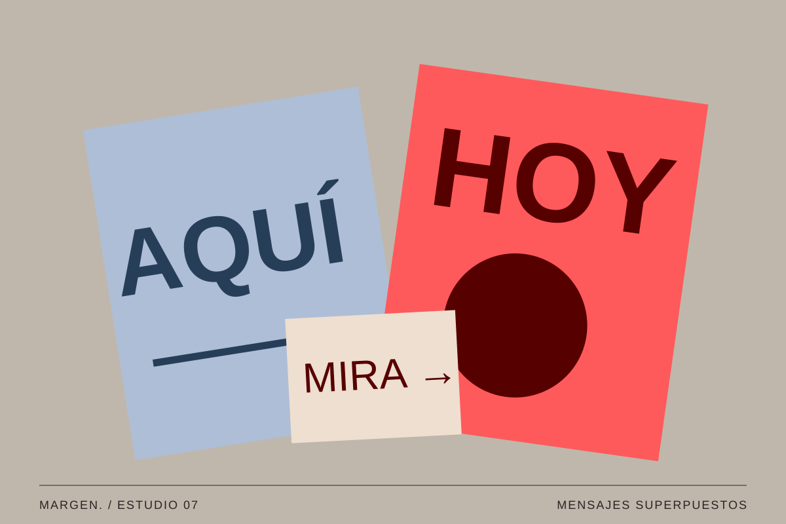
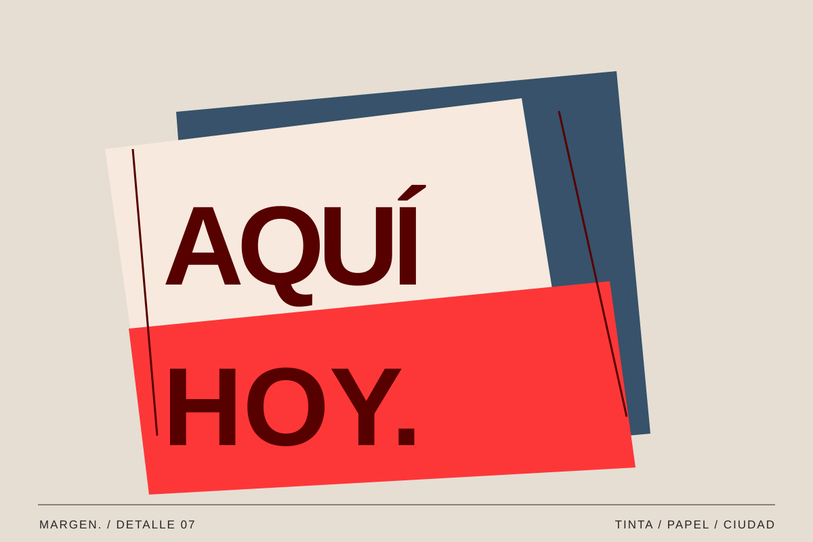

08 / Cultura / Vol. 001
Carteles que nos hablan
Una ciudad también tiene voz.
MARGEN. / Texto editorial ·

Los carteles hacen visible lo que sucede en una ciudad: una actividad, una protesta, una tienda que abre. Además de informar, construyen una parte de su paisaje visual.
Leer mientras caminamos
Un cartel compite con muchas otras señales. Por eso necesita decidir qué se entiende primero y qué puede descubrirse al acercarse. La escala del título y el contraste son recursos para organizar esa lectura a diferentes distancias.
No todos se leen de la misma forma. Algunos los vemos desde el autobús; otros están pegados junto a una puerta donde podemos detenernos. Pensar en ese contexto ayuda a decidir cuánto texto incluir y dónde situar la información importante.
La jerarquía tipográfica es una herramienta para decidir qué información debe entenderse de un vistazo. Si un cartel anuncia una actividad, la fecha y el lugar no pueden quedar escondidos detrás de un gesto gráfico llamativo. El reto está en equilibrar carácter y claridad. Una palabra puede ocupar gran parte de la superficie, pero el resto del contenido necesita un recorrido cómodo para quien se acerque a leerlo.

Las paredes también guardan conversaciones.
Una conversación por capas
En un muro, un cartel puede convivir con restos de otros anteriores. Los bordes, las superposiciones y el desgaste forman una composición que cambia con el tiempo. La ciudad guarda huellas de mensajes que ya no están completos.
Fotografiar esas capas es una manera de prestar atención al paso del tiempo. También permite comparar estilos, materiales y formas de escribir. Una letra hecha a mano y un texto impreso pueden compartir pared y proponer voces muy distintas.
Esas capas de papel también cuentan cómo cambia una ciudad. Un borde que se levanta deja ver otro color; una fotografía impresa comparte espacio con un fragmento de tipografía anterior. Lo que en un archivo digital parece una pieza cerrada, en el muro se convierte en algo que puede modificarse cada día. Registrar esos encuentros es una forma de estudiar composición, memoria y comunicación a partir de materiales muy sencillos.

Del muro a la pantalla
Cuando un cartel se adapta a una publicación digital, cambia el espacio de lectura. El texto pequeño puede dejar de funcionar y el formato necesita ajustarse. Mantener la identidad no significa reducir la pieza entera sin revisar nada.
El ejercicio consiste en conservar la idea y volver a organizarla. ¿Qué palabra debe destacar? ¿Qué dato necesita encontrarse rápido? Un mensaje claro puede reconocer su origen y, al mismo tiempo, responder a un soporte diferente.
Al trasladar una idea a pantalla, hay que pensar de nuevo en el tiempo de atención y en la escala. Un cartel vertical puede funcionar bien junto a una puerta, pero quizá necesite otra relación entre imagen y texto para aparecer en un móvil. Podemos conservar su tipografía o su gesto principal y reconstruir la composición a partir de ellos. La adaptación funciona cuando reconoce el origen sin sacrificar la lectura en el nuevo formato.
Diseñar para ser encontrado
La ciudad está llena de mensajes que no pedimos ver, pero que de alguna manera nos acompañan. Algunos desaparecen en pocos días; otros permanecen lo suficiente para convertirse en referencias del barrio. Su presencia muestra que la comunicación gráfica también forma parte de la vida cotidiana.
Observar carteles es una buena manera de aprender a sintetizar: qué destacar, qué eliminar y cómo lograr que una idea siga siendo reconocible entre muchas otras.